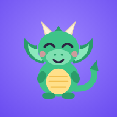

Clefwing Privacy Policy
Last updated 25 September 2026
- Everything the app remembers stays on your device. It is never sent to us or anyone else.
- The microphone is only used to hear which piano note is played. Nothing is recorded or saved.
- No accounts, no advertising, no analytics and no tracking.
- Nothing in the app can be bought with real money.
Who we are
Clefwing is a note-reading game for young piano students. It is made by Joseph Rich, an independent developer based in Melbourne, Victoria, Australia. In this policy, "we" and "us" means the developer. You can contact us about this policy at clefwingnotes@gmail.com.
What the app keeps on your device
To work, Clefwing saves the following on the device it is running on:
- Each player's name and their dragon's name, typed in when a player is added. A family can add several players on one device. We suggest a first name or nickname.
- Practice progress: lessons completed, XP, gems, streaks, minutes practised each day, and how quickly and accurately each note was read.
- Settings: the daily goal, sound on or off, and the piano's tuning.
- Shop and prizes: dragon outfits bought with gems, and any real-world prizes a grown-up has added and the child has claimed.
This information is saved in the app's own storage (or your browser's storage if you use Clefwing on the web). It never leaves the device. We cannot see it, and it is not backed up to any server of ours.
The microphone
Clefwing asks for microphone access so it can hear which note is played on the piano. The sound is analysed on the device, moment by moment, to work out the pitch, and is then discarded. Audio is never recorded, saved or sent anywhere. The microphone is only in use during lessons, tuning and the sound check.
The optional read-aloud feature uses the voice built into your device. The text is spoken on the device, and nothing is recorded or sent anywhere.
You can turn microphone access off at any time in the device's Settings. The app still works: lessons then use tap-to-answer questions instead of playing.
What we don't do
- We don't collect, store or receive any personal information.
- We don't use analytics, advertising, tracking or third-party software development kits.
- We don't sell or share information. We have none to share.
- There are no accounts, logins, chat or social features.
- There are no in-app purchases. Gems are earned only by practising and have no real-money value.
Children
Clefwing is designed for children. Because it does not collect personal information from anyone, it does not collect personal information from children. The areas meant for adults (settings, prizes and progress reports) sit behind a simple parental gate.
"Prizes" are rewards a parent or carer chooses to set up, such as "choose Friday dinner". They are recorded only on the device, as a reminder between the child and the grown-up.
Deleting information
You are always in control of the information on your device:
- To erase a player's progress, open Grown-ups and use Reset progress, or Remove to delete that player completely.
- To erase everything, delete the app. On the web, clear the website data for this site in your browser settings.
Since we don't hold any of your information, there is nothing for us to access, correct or delete on our side.
Apple and hosting
If you download Clefwing from the App Store, Apple handles the download and may give developers anonymous, combined statistics (such as the number of downloads) under Apple's privacy policy. These cannot be used to identify you.
The web version is hosted on GitHub Pages. Like most websites, GitHub may keep technical logs such as IP addresses for security, under the GitHub privacy statement. The app itself sends nothing to GitHub or anyone else.
Changes to this policy
If Clefwing ever changes how it handles information (for example, if an online feature is added), we will update this policy and the date at the top before the change takes effect. If the change means collecting any information, we will make that clear in the app first.
Contact
Questions about privacy? Email clefwingnotes@gmail.com.
If you are in Australia and are unhappy with how we have handled a privacy matter, you can also contact the Office of the Australian Information Commissioner.
← Back to Clefwing